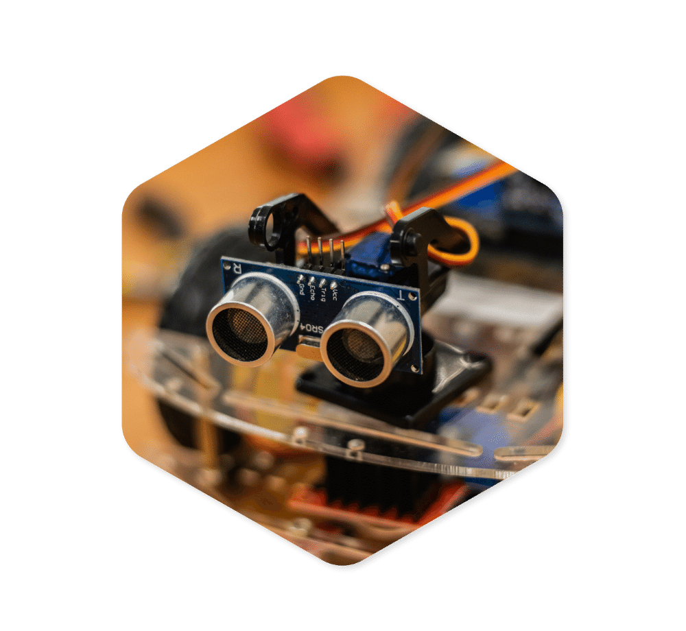
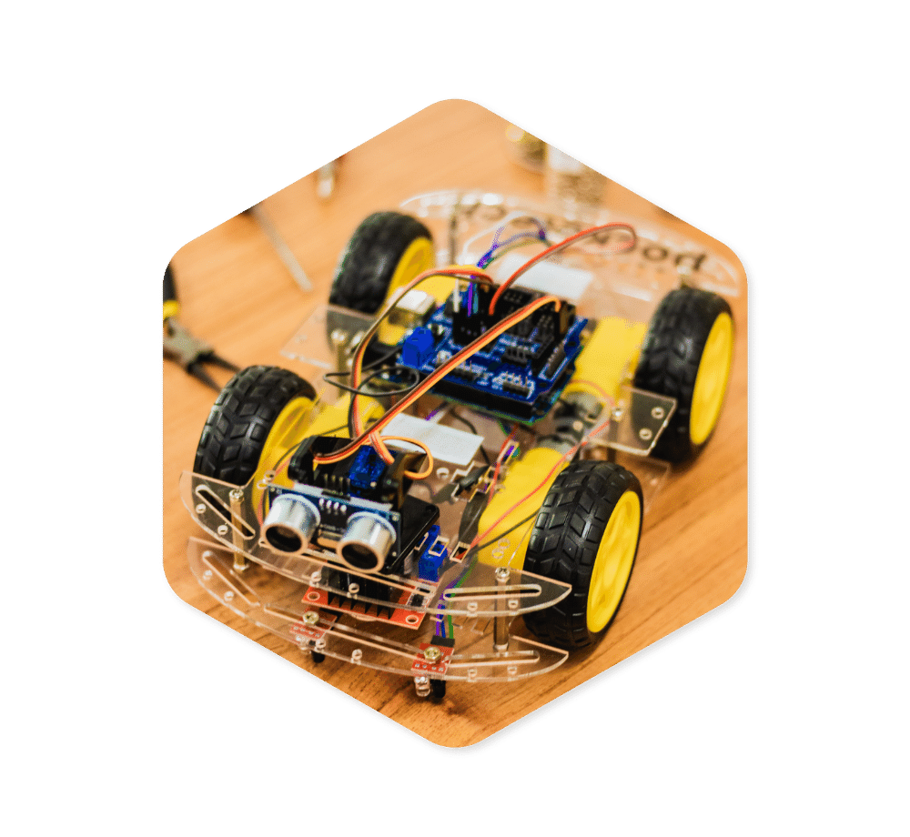
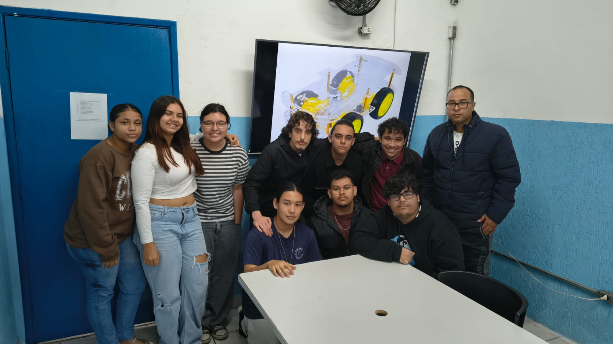

A NOSSA ESCOLA NO MODO FUTURO.
Alunos de Desenvolvimento de Sistemas e Logística uniram forças pra colocar um robô autônomo pra rodar nos corredores da E. E. Colônia dos Pescadores. Sem enrolação: puro código, tração de 4 rodas e inteligência na pista.

Engenharia e tecnologia a serviço da escola
O projeto nasceu do desafio de unir duas áreas do conhecimento técnico em uma aplicação prática, resolvendo demandas reais de mobilidade interna de materiais na E. E. Colônia dos Pescadores.
Desenvolvimento de Sistemas
Responsável pela lógica, código e eletrônica principal do robô:
- Programação do microcontrolador Arduino
- Lógica de controle dos 4 motores DC
- Leitura e tratamento dos sensores
- Desenvolvimento futuro da interface de controle web

ROBÔ AUTÔNOMOLogística
Responsável pela gestão de rota, materiais e eficiência do fluxo interno:
- Gestão dos materiais transportados
- Cálculo e otimização da trajetória
- Preparação e verificação do percurso
- Organização e definição do fluxo de movimentação
Automação e eficiência no ambiente escolar.
O robô foi desenvolvido para realizar o transporte de pequenos materiais dentro da escola, reduzindo deslocamentos desnecessários e aplicando soluções reais de automação no cotidiano escolar.
Atualmente transporta:
- Celulares recolhidos
- Pequenos objetos
- Materiais escolares leves
Evolução futura:
- Notebooks
- Materiais de maior porte
- Cargas com maior peso
Solicitação
O material é inserido na caixa de transporte na origem.
Transporte Autônomo
Navegação do robô pela trajetória com desvio de obstáculos.
Destino
Entrega concluída no ponto A → Ponto B configurado.
Como o robô funciona
A lógica de processamento do Arduino integra os sensores e os motores em tempo real para permitir navegação autônoma e desvio de obstáculos.
Arduino UNO
Microcontrolador central responsável pela leitura contínua dos sensores e execução do código de decisão e movimentação.
Sensor Ultrassônico
Mede a distância de objetos à frente emitindo ondas de ultrassom para evitar colisões nos corredores.
2 Drivers Ponte H
Módulos L298N que recebem o comando do Arduino para controlar o sentido de rotação e velocidade dos motores.
4 Motores DC com Redução
Garantes tração independente em cada roda, torque suficiente para transporte de carga e agilidade nas curvas.
Trajetória e Navegação
O robô utiliza uma rota mapeada e otimizada pelo curso de Logística. O trajeto é calculado para evitar áreas de alto fluxo e garantir entregas rápidas entre as salas.
Detecção de Obstáculos em Tempo Real
Equipado com o sensor ultrassônico HC-SR04 na parte frontal, o robô dispara rajadas de ultrassom a 40kHz, calcula a distância dos objetos pelo tempo de eco e aciona a parada de emergência ao aproximar-se do limite de segurança.
Simulador de Distância Interativo
Arraste o controle para simular um obstáculo se aproximando da frente do robô:
Futuro Sistema de Solicitação via Web
A próxima evolução do projeto integrará uma segunda placa com conectividade Wi-Fi (ESP32), criando uma rede IoT que conecta professores e funcionários diretamente ao robô por meio de uma interface web.

1. Solicitação do Professor & Interface
O professor ou funcionário acessa o painel web em tempo real, seleciona o ponto de entrega (sala ou departamento) e dispara o chamado de transporte.

2. Requisição HTTP / Pacote de Dados
A solicitação é convertida em um pacote HTTP criptografado e enviada instantaneamente pela rede sem fio da escola.

3. Segunda Placa (Módulo Wi-Fi)
Uma placa secundária dedicada à conectividade intercepta os dados da rede e repassa a ordem ao Arduino UNO via comunicação serial.

4. Robô Parte ao Destino
O robô recebe a rota atualizada, desatracando da base para realizar o transporte e confirmação da entrega no local solicitado.
Evolução do Projeto
Etapa 01 - Projeto e planejamento
Estruturação das metas entre os cursos técnicos.
Etapa 02 - Construção física
Montagem do chassi e acoplamento de estrutura.
Etapa 03 - Programação
Codificação da lógica do microcontrolador.
Etapa 04 - Controle dos motores
Integração dos drivers Ponte H e rodas.
Etapa 05 - Detecção de obstáculos
Instalação do sensor ultrassônico frontal.
Etapa 06 - Testes de trajetória
Validação da rota fixa A para B nos corredores.
Etapa 07 - Controle por rede (Futuro)
Implementação de comunicação HTTP e chamada web.


Desenvolvimento de Sistemas traz Código, Controle e Automação. Logística traz Planejamento, Materiais e Trajetória. No centro dessa colaboração está o ROBÔ AUTÔNOMO, unindo tecnologia e aplicação prática no ambiente escolar.